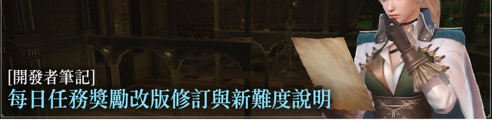
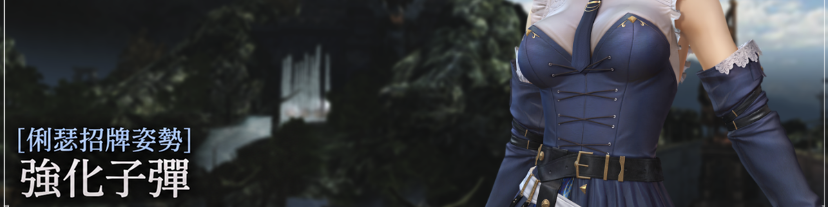
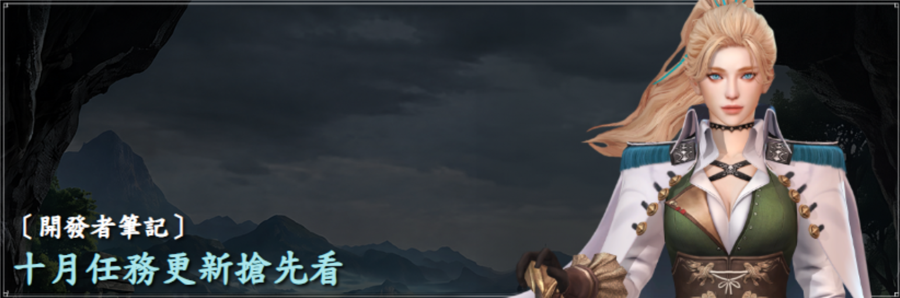
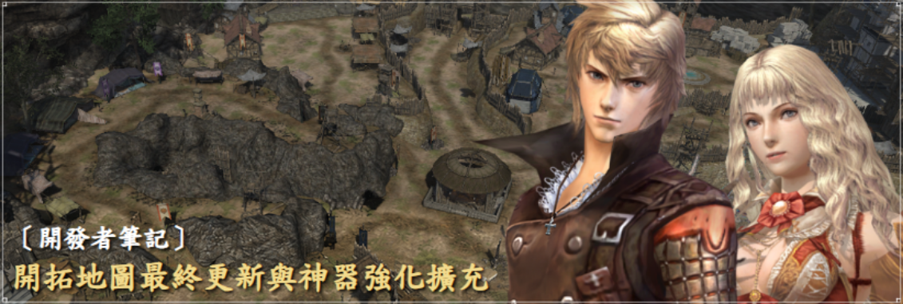

ISSUE 01
家族大廳與市場商店
擴充相關文字可能顯示亂碼或空白。
DOWNLOAD TERMINAL
目前已合併英文內容，其他項目將逐步更新。
包含主要漢化檔與支援中、泰、越文顯示的字體檔。
dictionary.ipf主要漢化檔案font00000.ipf中文字體顯示改善下載後請依照下方步驟安裝。建議先備份原始字體檔。
世界與區域地圖功能改善、新增「顯示技能範圍地形」功能、家族大廳搜尋結果改善
FIELD MANUAL · 01
三個步驟完成部署。安裝前請先關閉遊戲。
確認資料夾中有 dictionary.ipf 與 font00000.ipf。
若沒有修改 Steam 安裝位置，使用下方預設路徑。
C:\Program Files (x86)\Steam\steamapps\common\Granado Espada For SEA\ge將檔案放進 ge 資料夾，遇到同名檔案時選擇「取代目的地中的檔案」。
建議保留原本的 font00000.ipf，以免更換字體後不習慣。
FIELD MANUAL · 02
從遊戲的 ge 資料夾刪除 dictionary.ipf，即可移除漢化內容。
在收藏庫對 Granado Espada 按右鍵，選擇「內容」。
進入「已安裝檔案」，點選驗證，即可恢復原廠字體。
KNOWN ISSUES
以下項目仍需拆包解析，目前暫時無法修正與翻譯。
擴充相關文字可能顯示亂碼或空白。
部分怪物名稱目前無法套用漢化。
SEA CAMPAIGN LOG
點選活動圖片可查看完整繁體中文活動內容。
KOREAN SERVER NEWS
以下更新韓版官方新資訊，點選圖片可查看翻譯後的完整內容。

每日任務獎勵改版修訂與新難度說明。

命運裝填、四種強化子彈與技能介紹。

副本與獎勵變動。
韓版新角色與技能介紹。

開拓地圖與神器系統更新。
SEA MAINTENANCE NOTICE
預設顯示維修時間，展開後可查看本次完整更新內容。
SGT／新加坡時間
EST／美國東部時間
CET／歐洲中部時間
PATCH NOTES · 2026.10.14
世界地圖（Alt+W）與區域地圖（Alt+Z）的功能已改善，使地圖查看更加便利。
※ 以下操作以透過滑鼠右鍵開啟的區域地圖為準。
| 操作 | 功能 |
|---|---|
| 移動標記與傳送箭頭［左鍵］ | 顯示相連區域的區域地圖。 |
| 區域地圖［右鍵］ | 返回上一個查看的區域地圖。 |
※ 若單一移動標記連接多個區域，可在「選擇區域」視窗中選擇想查看的區域。
「遊戲選項（Alt+O）－基本－技能選項」將新增「顯示技能範圍地形」功能。
在家族大廳角色清單視窗中搜尋角色或道具時，搜尋結果將從清單頂端開始顯示，方便快速查看。
情報中心「副本」分頁可登錄的「書籤」數量上限將由10個增加至20個。
※ 此外，也將進行其他錯誤修正及UI／UX改善。
※ 請注意，本公告中使用的圖片並非實際遊戲畫面，而是為了協助理解內容所製作的AI生成圖片。